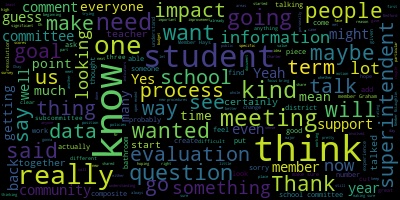

[Hays]: Yes.
[Hays]: Sharon Hayes, 69 Ripley Road.
[Hays]: I had a question about one specific thing that was mentioned.
[Hays]: The replacement for the response to intervention, that was really a huge rollout, I remember.
[Hays]: At least, was it last year or the year before?
[Hays]: And I know I was specifically very interested in it because as an educator myself, I've been involved in response and intervention
[Hays]: in other cities and towns and it's a really good process for identifying students who need extra support and then making sure you follow up in a set amount of time to see if they need to go further, if they need more support, if they need to be tested for special education.
[Hays]: So I'm a little concerned to hear that that's being dropped or being morphed into something else.
[Hays]: Well, I guess I'm wondering, is there going to be a description of what that is?
[Hays]: Because I've never heard of this new one.
[Hays]: I don't know if it's specific to Medford or not.
[Hays]: But like I said, I know the response to intervention.
[Hays]: I know it works well.
[Hays]: So personally, I'm a little concerned to hear it's being changed.
[Hays]: Thank you.
[Hays]: Sharon, you can come on up.
[Hays]: And this is probably more, maybe it's going to be discussed at another meeting in more depth.
[Hays]: I just know that there were a lot of questions and issues with how to even implement the RTI piece of it, in terms of having staffing to do all of the pieces of it, in terms of going into the classrooms, doing observations, and then providing whatever supports were needed.
[Hays]: Again, I'm just curious now that it's going to be even a broader process or include more types of interventions or more types of needs, how that's going to be implemented, given that my understanding was RTI has not even been completely implemented yet, the academic piece of it.
[Hays]: So that's...
[Hays]: Kind of what I'm wondering.
[Hays]: I don't know if there's going to be another meeting to talk about it in more depth.
[Hays]: We did.
[Hays]: Miss, um, member Hays.
[Hays]: Hi.
[Hays]: Um, I have a question.
[Hays]: If you could go back, I don't know if you can go back to the chart.
[Hays]: So on the week of 2-7 where it says PCR pool testing and contact tracing for high need students.
[Hays]: Is the PCR testing only for high need students?
[Hays]: Okay.
[Hays]: Can I have a couple other questions unless someone else
[Hays]: I wanted to ask about the infographic that went out, which I thought it was great that it went out so quickly that that information just in a really clear simplified.
[Hays]: That was wonderful and helpful.
[Hays]: I did want to ask about one possible clarification on that, if there's possibility of tweaking it.
[Hays]: I didn't think it was particularly clear when day one since the since really day zero is supposed to be the day when you first find you have symptoms or test positive.
[Hays]: And then from there you start counting one.
[Hays]: With that in mind, I wanted to ask again about the communication going home in the backpack that we've talked about a few times.
[Hays]: if we can get again because there's so many changes that are happening that to get that home because not everyone always accesses the information that comes either through email or on the school website and we talked about that and I was hoping that maybe that's going to happen soon especially because then we can get make sure it all gets out translated and
[Hays]: everyone gets it.
[Hays]: Going back to the original reason we were looking to start the budget process earlier, looking to be able to hire or have a wider pool of candidates to hire from.
[Hays]: As a teacher, I know when I would look for jobs, I would start looking probably even in early March.
[Hays]: And there were lots of towns that were listing 2030 anticipated openings.
[Hays]: Is there any reason we couldn't do that, that we at least start
[Hays]: getting a pool of candidates we know are interested?
[Hays]: Maybe I'm unaware, has that been done before?
[Hays]: Have I just not been aware of it?
[Hays]: Oh, it wasn't, okay.
[Hays]: Thank you.
[Hays]: Yes.
[Hays]: So
[Hays]: You know, as the resolution states, we know from many of the experts in the field of pediatric mental health and pediatric psychiatry that there is a significant mental health crisis.
[Hays]: And we've talked about this at meetings before.
[Hays]: And so this was really an effort as we move into the budget season.
[Hays]: to make sure that we're kind of all starting on the same page as to what the supports are that we already have at Bedford public schools.
[Hays]: Some of the titles I think are, you know, we started to talk about it at one meeting I think prior to before I joined.
[Hays]: and understanding what the titles are and where the direct services to students come from, and how they're accessing those services, how many of them are accessing them, just so that we can begin to have, or have a more in-depth conversation about what our needs are.
[Hays]: So that was the purpose of this resolution.
[Hays]: Yeah, so the reason behind that was I know that as a former special ed teacher myself, I know that students who have it on their service grid are going to get it no matter what.
[Hays]: So this question was, do we have enough really supports to cover students who don't necessarily have that legal obligation of having it on their IEP grid?
[Hays]: Excuse me.
[Hays]: Just to make sure that people understand, because there's a lot of terminology, diagnostic testing, can we go over exactly what will be in place after the pool testing is done this week so people fully understand the different
[Hays]: Thank you.
[Hays]: I know I've had several questions from people in the community about for families that may have someone living with them who is high risk for any number of reasons, immunocompromised or older or too young to have the vaccine.
[Hays]: And I think I already asked this personally of Avery Hines.
[Hays]: I just want to make sure that everyone gets to hear it.
[Hays]: Is there a way or how can families
[Hays]: Since we're not doing contact tracing if they need to know if they if they really have a reason to need to know if there's someone in the classes test positive because they they want to have that information in terms of the person at home that's at risk, how can they or can they is there a way for them to go about.
[Hays]: talking.
[Hays]: I think what nurse Hines had said was to have them talk to the school nurse.
[Hays]: I just wanted to make sure that kind of got out in a public forum.
[Hays]: Member Hays.
[Hays]: I just wanted to clarify, because I thought your question had more to do with, if there's more than 16 kids identified that need the support,
[Hays]: will you only go with the lowest, you know, 16, or is there an opportunity to expand to two groups at a grade level?
[Hays]: Thank you.
[Hays]: A couple of
[Hays]: hopefully quick questions.
[Hays]: One is, I feel like I remember this being discussed at a meeting, but I think it predated me, talk about a sliding scale to increase the revenue from those who maybe could afford a little bit more while still keeping it affordable for others.
[Hays]: I feel like that's been discussed.
[Hays]: Maybe there was a reason why it was dismissed.
[Hays]: I don't know.
[Hays]: And then I'll ask my other question into the boat,
[Hays]: Given that we were just talking about how limited it is really difficult to find after school care.
[Hays]: Before school, I'm sure I know from experience after school care is very difficult to find, and given that especially it's hard to find anything affordable.
[Hays]: Can we talk about or has there been talk about making sure that there are seats, some seats available?
[Hays]: I don't know at this point.
[Hays]: I think you spoke earlier, but I'm not sure we talked about numbers of how many actual
[Hays]: students that are from low income or economically disadvantaged families, and how are we making sure that not only it's affordable for them, but there are seats available for them, because it's going to be that much harder for them to find accessible, affordable child care than for some of the members of the community.
[Hays]: Is there some way we can get more detailed information about what you're looking at?
[Hays]: I don't know if that's even appropriate.
[Hays]: has there been consideration from the other end, looking at the data of how many people could afford more so that maybe this modest, very modest increase could be more of an increase to people who could afford more?
[Hays]: Hi, thanks.
[Hays]: I just wanted to say, too, given this is my first time going through the evaluation,
[Hays]: It was difficult, I have to say, because there are, even though I understand from Member Ruseau that it's been actually streamlined by DESE, there still were 20 indicators that we needed to give an evaluation on or give some kind of feedback on.
[Hays]: And looking back at some of the information from DESE, I think as we move forward, I know Member Graham has kind of started us on the path
[Hays]: updating this process to more closely match what DESE has.
[Hays]: According to DESE, we should be choosing like six to eight of focus indicators that we would really be doing our evaluation on, which I think makes a lot more sense in terms of helping us as a school committee and also helping
[Hays]: the superintendent kind of focus on what our main goals are, even though, of course, she's always and we're always looking at the whole picture.
[Hays]: You know, I think, I think as as member McLaughlin said, I think that when the new superintendent came in, I think there was hope for or expectation and possibly unrealistic, definitely unrealistic expectation of
[Hays]: instant change and we're excited, we're going to make all these changes and kind of update a lot of policies, update a lot of curriculum, just everything.
[Hays]: And not only I think was it probably the timeline that people were hoping for, unrealistic anyway, but then you throw in the pandemic and you know, the focus shifted and it had to shift and we're really still coming out of that.
[Hays]: So,
[Hays]: I wanted to make that point.
[Hays]: And also just to make the point that I think anytime you do an evaluation of anyone, unfortunately, I think often you go towards the, I don't want to say negative, but you go to where there could be improvement.
[Hays]: And it's also, you know, there's a lot of, I went through and made a list for myself of just all the things that have happened just this year, all the things that Superintendent has done.
[Hays]: And there's a lot.
[Hays]: a lot.
[Hays]: And so I want to make sure that at least I want to make clear from my point of view, when I talk about areas where I see improvement, that we can make improvement or make growth, I don't see that as deficiencies so much as we're always going to have areas of growth.
[Hays]: I mean, hopefully we're always striving for more.
[Hays]: So I, you know, when we start talking about where we see areas that we could improve, it's, you know, a district improvement, it's certainly
[Hays]: Also because the superintendent represents the district.
[Hays]: It's improvements that we see are asking her to implement, but I just wanna, again, like I said, that idea of areas of growth and improvement versus deficiencies.
[Hays]: So that's where my head is at in terms of the evaluation and the comments I made, and just wanted to say that.
[Hays]: Thank you.
[Hays]: Thank you.
[Hays]: Member Hays.
[Hays]: Thanks, I just I wanted to add to that in terms of I think that's, that's part of what we can improve on with the evaluation process.
[Hays]: Also, I looked at some other cities and towns just to see how it's done in other places.
[Hays]: And
[Hays]: And I think they also said this in my orientation, that part of the process when we create the goals is to really talk about what evidence we would need to see to be able to evaluate you clearly and accurately and fully.
[Hays]: So I think that as we move forward and start to really try to update this process and make it mirror more, I think what Desi intends, that's a piece that we really should be doing is really being clear about what evidence we want to see so that you know what to expect from us because
[Hays]: You know, if it's open-ended and you don't know, you may feel like you're providing us what we need and we're looking at it and going, but I don't know if that quite meets what I was thinking.
[Hays]: So I think if we can all be on the same page about what evidence would give us, you know, would help us to be able to evaluate you, I think that it will go a long way to making this process easier also and fairer.
[Hays]: Thank you.
[Hays]: Thank you.
[Hays]: Yeah, no, I just wanted to say the same as some of my other school committee members have said.
[Hays]: I likewise don't feel like I made any errors.
[Hays]: There's nothing I want to change.
[Hays]: I do hope and plan to meet with the superintendent over the summer just to go over some of my comments and some areas that I didn't get to make any comments because of other things going on in my life.
[Hays]: But I think that the major thing that I'm finding from this being my first time and just the general kind of confusion that I'm hearing is that we really do need to meet to talk about the process.
[Hays]: I think, you know,
[Hays]: it would be great if we had someone from outside to come in and talk with us about the process because it seems like we ourselves are not clear on it.
[Hays]: So I don't know that just an internal discussion is going to yield satisfying results for everyone.
[Hays]: So, you know, it's, I think it's, I think it's good.
[Hays]: I'm just gonna say, I think it's good that we're all taking this so seriously that we are having some major discussions and finding it confusing.
[Hays]: I think that means that we're all taking it very seriously and trying to figure out the best way
[Hays]: to make this work both for the school system, but also for the superintendent, because she's ultimately the one who's being evaluated.
[Hays]: And if we're lacking clarity in it, then it's, you know, it's a tough, tough to be the one who's being evaluated if the people doing the evaluation are expressing confusion.
[Hays]: So I'm all set with my evaluation though, personally.
[Hays]: Thank you.
[Hays]: Ms.
[Hays]: Hayes?
[Hays]: Member Hays?
[Hays]: Thanks, I had a question about the the memo that went out about bus transportation and that buses are crowded and I had several parents express some worries about that, especially I think there were a couple who had to were in the school for the first time and who aren't completely clear about.
[Hays]: the cutoff of the one mile and they're concerned that they might actually be told that they can no longer take the bus.
[Hays]: So will there be a clarification of that sooner?
[Hays]: How will that be communicated to parents if they are no longer going to access the bus?
[Hays]: So I know, for example, in my case, I was given a choice of three different bus stops that were really close, all were close to my house.
[Hays]: So when you say a bus stop is eliminated, those families are no longer eligible for the bus or they need to go to, I just think that could be confusing.
[Hays]: Just curious about that when you present again at the November meeting, will we at that point get information about class sizes?
[Hays]: Mayor.
[Hays]: That's what I'm looking at.
[Hays]: We didn't get that.
[Hays]: Yeah, I just wanted to point out, and maybe you still want like hard and fast COVID counts, but on page three under coverages, it does talk about medically imposed restrictions being covered.
[Hays]: So I would assume that would be a medically imposed restriction.
[Hays]: It's number two under coverage.
[Hays]: Thank you.
[Hays]: Yes.
[Hays]: Yes.
[Hays]: I just had a quick question about the investigation program at the elementary level.
[Hays]: I recall the early versions of investigations that some of the criticisms were that they lacked some of that procedural like a real emphasis on that in the early math facts and things has that been.
[Hays]: remediated or are we adding extra in to make up for what it might be lacking since it's very problem solving based and sometimes does, or at least in the past, it didn't have.
[Hays]: Hi, I have a question about looking at the anchor strand analysis, which I know you don't talk about at this point, but we had it in our binder.
[Hays]: And one thing that stood out to me is that our lowest scores pretty much by far are in any question that involves writing, whether it was an actual essay or constructed response, they call it, or, you know, and to be fair, it matched the state really that that's true for the state too.
[Hays]: But I'm wondering for our district, what are we doing to really focus?
[Hays]: I mean, we should focus on all of reading obviously, but clearly that's a,
[Hays]: difficulty for our kids.
[Hays]: And actually, if you could also explain to me, what does production and distribution of writing refer to?
[Hays]: Yeah, thank you.
[Hays]: That makes a huge difference in what kids can do.
[Hays]: It's a completely different task than writing a, used to just be the essay.
[Hays]: That's what I was used to seeing.
[Hays]: Member Hays.
[Hays]: One more question.
[Hays]: Yes.
[Hays]: Has it been implemented across the board now?
[Hays]: I know that you mentioned that as one of the action items.
[Hays]: Is it in every classroom now?
[Hays]: Amber Hayes.
[Hays]: Hi, thanks.
[Hays]: I just had a general question, and this is why I waited until the end.
[Hays]: Looking at the data, when you do disaggregate by school, and I've only gotten so far at this point of doing elementary ELA, but there is a trend when you look back through the years of certain schools having higher scores than others, and it seems to mirror
[Hays]: needs of the population in those schools.
[Hays]: So I'm curious about how that figures into your, you know, your data dives and what you're talking about and how you determine then equitable distribution of resources.
[Hays]: You know how you level the playing field for those who are starting maybe with less.
[Hays]: Yeah I guess I would hesitate to um a classroom teacher can only do so much if they've got a lot of needs in their classroom and they can be a wonderful great teacher who
[Hays]: does all the things that a teacher needs to do to meet the needs of their students.
[Hays]: But if you've got more of those needs in your classroom, it's just going to be harder.
[Hays]: And so that's what I mean, I guess, in terms of looking how we spread out our supports.
[Hays]: So I'm just hoping that's a part of that.
[Hays]: We've got limited resources, but it's just a question of, are we using them?
[Hays]: When I look at the data and I see that we're really not leveling very much, at least as far as I can see from the data.
[Hays]: between the schools and, you know, how we try to do that when we're, you know, our focus is on equity and are we looking at how to, how we use our resources equitably?
[Hays]: Yes, yes.
[Hays]: Sharon, you're mic'd.
[Hays]: Sorry, I just asked if you are able to actually shift the supports depending on, as you just said, if one school needs more than the other, but the next year it's a different school, you're able to shift the supports around like that?
[Hays]: Thank you.
[Hays]: Yes.
[Hays]: Thank you.
[Hays]: Member Hays.
[Hays]: Thank you.
[Hays]: Yeah, I also had something for the good of the order.
[Hays]: I wanted to, as we've talked a lot about trying to get more student engagement and student involvement, I wanted to discuss the possibility or at least bring up the possibility of having an agenda item that's actually dedicated to the student representatives, so that if they had something they wanted to talk about, if there was an issue, a question, a concern,
[Hays]: or if they wanted to highlight the student achievement, anything, just to put it on the agenda so it's not as if they have to approach us to ask if they can talk.
[Hays]: Just a thought, just a way to try to give them more space and support their voice in our meetings.
[Hays]: Probably the school side.
[Hays]: Thank you, I just had two very quick things.
[Hays]: One, well, first I'd like to mention that it's great we've already got the microphone for our student representative.
[Hays]: I did want to check on the follow through with the idea of putting student participation on the agenda and just, I brought it up, but I don't think we talked about how that would, we'd follow through on that, whether that needs to go to maybe the rules subcommittee to talk about.
[Hays]: Aye.
[Hays]: One other quick thing, so we had a training meeting back in October, was it, about the superintendent evaluation, and I know we've talked a little bit about, there were some things that came up that we need to either update or refine.
[Hays]: If we could put, I think we were talking about maybe doing a committee of the whole for that, I just wanted to make sure, again, there's a lot going on that got followed through with.
[Hays]: I'll make this brief.
[Hays]: You know, we are talking a lot about reading this year.
[Hays]: We already have another report requested about looking into our, how we're following the science of reading and the new,
[Hays]: Well, I guess it's not too new, but the research that's out there about how to the right way to teach reading and this just kind of falls in line with that.
[Hays]: I know that we, the state within the last few years has mandated the dyslexia screening and they are now looking towards also, um,
[Hays]: requiring interventions to be put in place.
[Hays]: And so this particular motion or request for report is just looking at what are we doing now?
[Hays]: We do have a dyslexia screener.
[Hays]: What do we have in place for students who are shown at risk by the screener?
[Hays]: What kind of data do we have and what interventions do we have in place?
[Hays]: Member Hays.
[Hays]: I guess I'd want to add to that, I think another piece that you mentioned, and I don't think you deliberately mentioned it quickly, but
[Hays]: the having instructional support coaches as much as the professional development is important, that ongoing support to teachers where they can troubleshoot when they're trying it out.
[Hays]: You know, you can't do that in a one day professional or even a five day professional development because things happen as you're teaching something and you need to understand how to tweak it or change it.
[Hays]: So I think balancing out, if we're talking about how we're going to spend money, you know, instructional support coaches versus
[Hays]: professional development or do we have the money for it all?
[Hays]: But I just don't want to, I don't want to go over that lightly because you did mention that.
[Hays]: And I think that that is incredibly important and something not to be overlooked.
[Hays]: I agree.
[Hays]: Thank you.
[Hays]: Member Hays.
[Hays]: Yeah, I had a couple of things, too.
[Hays]: Thinking about the budget process, as member Graham was saying, I think another thing that would be great for us to do within that earlier budget process is how can we bring the community in more on helping us develop the budget and hopefully also as an educational process for the community to understand how we make the budget and, you know,
[Hays]: decisions that have to be made, I think that's important for the community to be a part of.
[Hays]: And then as a, that is a part of maybe a larger goal is our role in educating the community about some of these processes and what we do, what it means to set policy.
[Hays]: I'm trying to think of some other ones.
[Hays]: We've talked about these kind of along the way among ourselves, maybe, maybe at meetings, we've talked about how there are certain things where we could hold maybe
[Hays]: town hall meetings that we could educate the public, or maybe we create videos that could go on our school committee webpage that people could refer back to any time when they want to understand some of the things that we do.
[Hays]: So again, that kind of view of us as a body that also communicates with and educates the community.
[Hays]: Member Hays?
[Hays]: I guess it would depend on what we're considering to be that goal timeline or the term, because how many we choose.
[Hays]: If we're only going to the end of this year, then we want to choose accordingly.
[Hays]: But if we're going to
[Hays]: start now and go until next January, we might want to choose more goals.
[Hays]: I just wanted to, you know, member Ruseau had
[Hays]: asked if I had any thoughts about it.
[Hays]: I do think it would be a lot for a new member to step in and try to help set goals for something they've never been a part of.
[Hays]: So as for that piece of information, I mean, I do think that would be hard and depending on how many new members we have, that could make it a really difficult process.
[Hays]: The other thing I'm wondering is, you know, when I looked through all these documents, it seemed the idea of all the goal setting is from the top down, right?
[Hays]: That our goals should
[Hays]: the superintendent's goals coincide with the goals all the way down.
[Hays]: So if everyone else is working on basically a september to june, maybe it doesn't make a difference, but I just wanted to throw that out there that if we're working on a different timeline, but all of our goals are supposed to work together, you know, does that make a difference?
[Hays]: Member Hays and Member McLaughlin.
[Hays]: I just wanted to come back to the K to five level.
[Hays]: I wholeheartedly agree with you that both developmentally and philosophically, we don't want to get into some level with a K to five, the same level that we want to get in the six to eight or nine to 12.
[Hays]: I do think there's a little bit of
[Hays]: that it feels so open ended that parents don't know what to expect.
[Hays]: And correct me if I'm wrong, maybe it's written down somewhere and I'm the parent who hasn't found, hasn't looked at it.
[Hays]: I think even being at the same school as the mayor's children, I've had different
[Hays]: experiences with different teachers.
[Hays]: I had a teacher who sent home little notes if there were misbehaviors that weren't, I don't think were put in a folder anywhere, but it was more the communication to me just to let me know your child is, you know, doing somersaults during circle time.
[Hays]: And now I have a teacher who's very good at letting me know verbally, either calling me, sending an email, catching me after school.
[Hays]: I think the concern though, I think that the genesis of this original question about parent notification, at least at the K to five level was, you know, I don't know how often this happens, but there were situations that we've been aware of where parents had been brought in after a number of incidents at school.
[Hays]: And again, they're, you know, they're, they're small children.
[Hays]: They're not huge incidents, some of these, but you know,
[Hays]: And in the process of saying, we need to talk about your child, they say, well, all these things happened.
[Hays]: You know, these things have been happening.
[Hays]: And the parent is like, well, I had no idea.
[Hays]: So where in between can we have somewhat of a standardization or some kind of a process that parents will know and the teachers will know that across all schools, it's expected that at this point you contact a parent or you call the parent every time.
[Hays]: any, whatever the process would be, but I think it feels, the way we talked about it tonight, it feels very open-ended to an extent where as a parent, I don't really know what I should expect if my child is misbehaving or having any kind of an issue.
[Hays]: Is that, so I guess the question then, is that something you are working on at this point?
[Hays]: I feel like we're all getting very tired, but if I could just a couple of quick questions, and thank you.
[Hays]: I met with you for quite a while to go over some of this, and I really appreciate that.
[Hays]: And just a couple of quick clarification.
[Hays]: I think these were things we already talked about privately, but good to talk about them here.
[Hays]: So that question number five about how is progress monitored of at-risk students who are not receiving intervention.
[Hays]: So the gist of that question was an assumption on my part that I think is true in every district that every district has limited resources.
[Hays]: And so to the extent that I guess the question being when students have that red or in that red zone or whatever they want to call it, red flagged,
[Hays]: Are we able to service, do we automatically service every child who's in that red zone?
[Hays]: I think a lot of this, too, kind of harkens back to something we were talking about earlier, that idea of what can parents hold onto to understand that if my child, if it gets to report home, I don't know if the report shows
[Hays]: red, you know, for, I don't remember what the dibbles, I did it a while ago, but I don't remember anymore.
[Hays]: And I think it's changed.
[Hays]: Does a parent report go home that show where parents would see, oh, my child's in the red zone for this, this and this.
[Hays]: And so I guess that question being, and there was a flow chart that you, you linked to, and I know we talked a little bit about, is there a way to maybe,
[Hays]: flesh that out a little bit for parents to the extent that you can with the understanding that teachers use their professional judgment in terms of looking at multiple pieces of information.
[Hays]: But again, something that parents can hold on to if they see, they feel their child is struggling and also see that they're getting this report that says, yeah, your child did struggle on this assessment in this area.
[Hays]: How are we communicating to parents that
[Hays]: you should expect or you can expect that we will be intervening or that we will be contacting you to talk about whether we need to intervene and what we're doing.
[Hays]: The other question I had, and again, we've talked about this, for parents whose
[Hays]: who have a child who is either receiving the tier two level support or receiving special education support in reading.
[Hays]: Is it fair to say that at this point, if they, if their child is being sent home with, or that they are somehow getting information that their child is using leveled readers or is being told to use queuing strategies, such as use the picture to help you.
[Hays]: use the context, what would make sense, those three cueing strategies, that it is very appropriate for that parent to question why that's being used, whether they first, they should, obviously I think we talked about first go to the teacher and talk about it, but that, it is fair for a parent at that point to question, given that my child has already been identified as having areas of weakness that would make,
[Hays]: those queuing strategies actually be detrimental to their progress?
[Hays]: They should question that.
[Hays]: I would just want to clarify.
[Hays]: So my question pertained to kids who have already been identified as having weaknesses through the screener or otherwise in phonics.
[Hays]: So I would suggest they should be taking home decodable readers at that point, that if they're taking home level readers, or maybe that's a conversation, but you know, there certainly are in any classroom, a percentage of kids who don't need decodables, but we're talking about kids who've already been flagged by a screener.
[Hays]: And those students should be taking home practice books that.
[Hays]: Okay.
[Hays]: Thank you.
[Hays]: Yeah, I don't think, I mean, it's pretty self-explanatory.
[Hays]: I think that anytime we start looking at increased adult presence or increased supervision, just that look at it from that particular subcommittee is important to have looking at.
[Hays]: And again, looking at the data that I know is already being collected to look at how students are responding to this intervention, or this intervention, these changes in procedures and additional staffing.
[Hays]: While we know that some students have already expressed that they're really feeling much safer and feeling more comfortable at school, we also know that there can be populations of students who may not be responding the same way.
[Hays]: And we want to look at some of those issues just to make sure that everyone feels they have a voice in this, and that sense of belonging is there for all students.
[Hays]: Thank you.
[Hays]: It seems to cover everything.
[Hays]: And it honestly feels like the process that we went through, I wasn't on the committee, the process that was went through with the naming of a school already.
[Hays]: So it seems to follow that pretty closely, I think.
[Hays]: Yeah, I agree.
[Hays]: I mean, I think it needs to be in there.
[Hays]: I think ultimately, as you both have stated, it is a responsibility of the school committee.
[Hays]: So ultimately, we do have to be the ones responsible to make sure that the name, in the rare occurrence, if the number one chosen name by the advisory committee or whatever just wasn't appropriate, or we had some reason to understand that it isn't a name that would be appropriate to use
[Hays]: I don't know if we wanna put something in there.
[Hays]: And this would, I guess, really just be in an effort for people who read it to understand that we would emphasize or choose a better word, the name or names suggested by the advisory committee that that would be, our preference would be to choose one of those names, but in the event that the name is more inappropriate or I don't know,
[Hays]: You guys might have better wording for it, but if we want to put something in there, at least to let the public know that yes, if you're on this advisory committee, it's not just that you're there and we still might just choose an alternate name just because, but that we do take it seriously and we do take the names recommended seriously.
[Hays]: Just a thought to put, maybe we could put something in there to that effect.
[Hays]: Not that I want it to get too wordy, but.
[Hays]: Sorry about that.
[Hays]: When we, in the event that we did have that wonderful $100 million donor who wants to fund our school and have their name on it, and maybe this doesn't belong in here, but we certainly have had incidents recently, not locally, but Tufts had an incident where they had a big building, had a building named after someone and changed the name.
[Hays]: Does that, would that need to go into this kind of a document or is that just totally out of the realm of this kind of, this kind of document in terms of that, that idea, if it turns out, if it turns out that big donor, for some reason we decide isn't any longer an appropriate name to have in our school, what would happen with that?
[Hays]: Yeah, so I think going back to a member Rousseau's question, I guess then the point of it is to raise money.
[Hays]: Cause if we're looking at different donation levels, getting different recognition than it is.
[Hays]: And I guess part of what I was, what occurred to me as we were talking about this, and I can't remember whether this was already in the plans for the playground and another space,
[Hays]: when we start looking at families being able to donate a brick or for $50, whatever, there are a lot of people who couldn't afford that.
[Hays]: So I'm wondering if we want to, and maybe this is separate from what we're talking about now, I don't know, but make sure we have a space that's maybe just anyone in the community wants to, I don't know, paint a brick, paint a, I don't know,
[Hays]: because I do think we get to a point where it's the people who have the money who can afford to do it.
[Hays]: And if we want to look at, again, if we're going back to this is a community playground, it belongs to the school, it belongs to the community, the kids, kind of making sure we're not excluding people through some of these.
[Hays]: But I like the idea in terms of the big donors, which you were talking about just a minute ago, I think that idea of maybe having a separate space where we have a plaque that recognizes whatever we determined to be those,
[Hays]: those big level sponsors and those who contributed time and energy into it.
[Hays]: I like that as opposed to having it, like you said, I think if we had every piece of equipment named or, you know, people could buy the swing set or then you do, it does feel like it gets into a pretty more of a commercialized almost playground, doesn't feel as much belonging to the community.
[Hays]: I like that idea.
[Hays]: I would agree with that.
[Hays]: OK.
[Hays]: All right, well, it's 5.02, and maybe in the interest of time, I will just go ahead and start.
[Hays]: Then we'll start.
[Hays]: I will go ahead and read the meeting notice, and we can continue to let people in if people show up.
[Hays]: Please be advised that on Thursday, February 16th, 2023, from 5 p.m.
[Hays]: to 6 p.m., there will be an evaluation subcommittee meeting held through remote participation via Zoom.
[Hays]: The meeting can be viewed through Medford Community Media on Comcast Channel 15 and Verizon Channel 45 at 5 p.m.
[Hays]: Since the meeting will be held remotely, participants can log in or call in by using the following link or call-in number.
[Hays]: And the number, one of the numbers anyway you can use is 309-309-205
[Hays]: and enter the meeting ID number 954-1274-6142.
[Hays]: Additionally, questions or comments can be submitted during the meeting by emailing shays at medford.k12.ma.us.
[Hays]: Those submitting must include the following information.
[Hays]: your first and last name, your Medford street address, and your question or comment.
[Hays]: As approved by the committee on February 1st, 2023, the evaluation subcommittee will meet to review and develop the process for the 2022-23 superintendent evaluation.
[Hays]: The agenda is as follows.
[Hays]: One,
[Hays]: Develop a timeline for the 2022-23 superintendent evaluation process, including due dates for all parties involved and a tentative schedule of subcommittee meetings.
[Hays]: Two, develop a process for the 2022-23 superintendent evaluation, including the timeline, templates, and instructions for school committee members.
[Hays]: And three,
[Hays]: Discuss the types of evidence the superintendent will provide to document progress on the year's goals and selected indicators.
[Hays]: And, oh, I just realized, are we missing a member?
[Hays]: I don't see Melanie McLaughlin on yet.
[Hays]: Two out of three of us, we can do the meeting?
[Hays]: OK.
[Hays]: Okay, so I will call the roll then.
[Hays]: Member Graham?
[Hays]: Here.
[Hays]: Member McLaughlin?
[Hays]: Oh, there she is.
[Hays]: Member McLaughlin, hi.
[Hays]: Calling the roll.
[Hays]: Member McLaughlin?
[Hays]: Yes.
[Hays]: Okay, so.
[Hays]: Member Glaufen is present, just connecting.
[Hays]: And Member Hays, present.
[Hays]: Present, thank you.
[Hays]: I couldn't get to the unmute button.
[Hays]: Thank you.
[Hays]: No problem.
[Hays]: So let's see.
[Hays]: So just to give a brief introduction as to why we're here for anyone who watches this who might not have seen our last meeting.
[Hays]: We, the school committee had a retreat with Dorothy Presser from the Massachusetts Association of School Committees, who has also worked extensively with Jesse on the superintendent evaluation process.
[Hays]: And through that retreat, she gave us a training, just an update on the superintendent evaluation process.
[Hays]: And through that meeting, we realized there were a few updates we could make to our process to align it more closely with
[Hays]: Desi's guidelines.
[Hays]: So we had a committee of the whole meeting on February 1st, where we discussed some of the updates we wanted to make.
[Hays]: And then at the regular school committee meeting on February 6th, the school committee approved some of those changes that we or
[Hays]: or approved some of the updates.
[Hays]: And one part of that was also approval for a new subcommittee to be called the Superintendent Evaluation Subcommittee.
[Hays]: And this is our first meeting.
[Hays]: So I don't know how far to go in the background.
[Hays]: Some of the things that have already been approved that were approved on February 6th,
[Hays]: included this year, rather than using a number rating system, we would use the word-based rating system that is in the DESE guidelines.
[Hays]: We'd be using, really following that very closely, using their wording for rating the superintendent, those words like exemplary, proficient, needs improvement, and unsatisfactory.
[Hays]: that we would, the subcommittee would be responsible for compiling, creating the process for the evaluation this year and also compiling all of the individual evaluations and creating the composite evaluations that we would then submit to the school, the full school committee for approval.
[Hays]: We agreed that the superintendent's evaluation would include the raw data from all the members in addition to the composite evaluation of the subcommittee.
[Hays]: And we also approved nine indicators that we would use from the superintendent evaluation rubric.
[Hays]: This year, we chose nine indicators that would most closely align with the superintendent's goals.
[Hays]: So for this first meeting,
[Hays]: I thought, and obviously members can chime in and let me know what they think, maybe we should start with the actual timeline, kind of work backward from the date where we want to have the final meeting of where we approve the composite evaluation, and then kind of work backward from there, and that would determine then also we could look at what meetings the subcommittee needs to have based on that timeline.
[Hays]: So I don't actually have anything to share, but I can talk about that.
[Hays]: I mean, I did make myself a
[Hays]: a personal agenda for this meeting.
[Hays]: So I can say, you know, what I have down is that we would need to start really with the final date, right?
[Hays]: That final composite evaluation date, sometime probably late in June.
[Hays]: And then working backward from there would be the dates, let's see, the dates by which the members would need to return their individual evaluations.
[Hays]: And then before that would be the date by which we would provide those, the templates for those evaluations to the members.
[Hays]: And prior to that would be the date of the, I think last year it was a committee of the whole meeting, um, where the superintendent prevent, uh, presented herself evaluation to us.
[Hays]: Well, I don't know if we need to, well, I think that's a separate issue of what template.
[Hays]: There are some templates we could just, there is a DESI template, but that was later on the agenda.
[Hays]: But I think that we need to know when the final, I think we need to start with when we know the final is gonna be and work backwards, because we could choose a date on, if we'd start with choosing a date when we're going to hand out the template,
[Hays]: then we move forward and find that doesn't work because we don't have enough time to complete the whole thing before we have a meeting.
[Hays]: I feel like we need to, I think working backwards seems to make more sense.
[Hays]: If we know when we're gonna have that final meeting, then we start talking backwards about how long we need to, because we are gonna need some time to create that composite.
[Hays]: And then that would work backwards from there.
[Hays]: So if we get a sense of when the final meeting would be,
[Hays]: Do we have, is there any reason why we can't have another, I know we have two regularly scheduled meetings already set.
[Hays]: Is there, I don't know if there's a rule that says we can't have another meeting, if we, because if we start pushing it back to May, then we're, I don't know, it feels like we're cutting off a couple of months, but maybe that's, I've only done one before, so maybe that's the way it's always kind of worked.
[Hays]: Yeah, Jenny had them up a minute ago.
[Hays]: She had typed them out.
[Hays]: And I think that was pretty much, I think the creation of the template, I mean, we could go and start with that if you want.
[Hays]: There is a template that Desi provides that, I mean, I don't know that we need to recreate the wheel, but we can look at it and see if we feel like that would work.
[Hays]: So whatever, eight weeks.
[Hays]: Well, do we want to put in and say then?
[Hays]: I mean, I think this kind of general eight weeks,
[Hays]: we need to work with how much, because we're gonna need a couple of weeks to compile, I would say.
[Hays]: And then two weeks for, I don't know, I don't remember last year if we had a week or two weeks for members to fill out the template.
[Hays]: It was like 10 days, I think, maybe two weeks.
[Hays]: All right, well, why don't we do that?
[Hays]: So if we say that, so if we're going to have the 6-12 meeting, the date at which we approve it at the full committee.
[Hays]: Vote on it.
[Hays]: then go back.
[Hays]: I think, Jenny, you actually kind of have it there.
[Hays]: Let's see.
[Hays]: We have some of it.
[Hays]: Sorry.
[Hays]: So 5A would be like a committee of the whole where the superintendent would present her self-evaluation?
[Hays]: So we want to schedule a meeting in April to look at a template together?
[Hays]: I can, I was going to share, I can share that today.
[Hays]: I mean, it could even be that we do a template today.
[Hays]: It's pretty straightforward, but we can come to that.
[Hays]: I don't know if we want to feel like we're jumping around if we, but we can take a look at that.
[Hays]: So we can, we can look at that tonight.
[Hays]: And if we want to work on it more than we could schedule a meeting just to go over the template and create the template or alter it in any way we see necessary.
[Hays]: I would back that up a little bit just to have the time if we needed, if we were going to do that, kind of the technical how to make it work.
[Hays]: I know the previous one we were using, I think took a lot of work from member Rousseau to make it work for everyone.
[Hays]: So I think if we're gonna create a new one, we'd wanna have some time to really work on it.
[Hays]: Would you like to see the DESI one?
[Hays]: Yeah.
[Hays]: I mean, it's really pretty simple.
[Hays]: Can I, I don't know if I'm, am I sharing right now?
[Hays]: Cause I've never shared before.
[Hays]: So this is the DESI one.
[Hays]: Right, which is, yes, that was my thought.
[Hays]: I think my software husband said he could probably could figure that out.
[Hays]: So, I mean, it's pretty straightforward and I think it's pretty easy to use.
[Hays]: Okay, and so I take a vote.
[Hays]: Is that correct?
[Hays]: Okay.
[Hays]: Roll call vote on having a committee of the whole on Monday, May 8th, that would include the superintendent self-evaluation and the presentation of the template for individual members to use for their individual member evaluation of the superintendent.
[Hays]: Member Graham?
[Hays]: Yes.
[Hays]: Member McLaughlin?
[Hays]: Yes.
[Hays]: Member Hays?
[Hays]: Yes.
[Hays]: Uh, motion passes.
[Hays]: Okay.
[Hays]: So what I have written down then is the 12th, at the meeting on June 12th, we would have that final vote by the whole committee.
[Hays]: It's a regular school committee meeting to approve the evaluation, the composite evaluation.
[Hays]: And then on the 5th, the week before, we would have a committee of the whole before the regular meeting to review.
[Hays]: Let's see, what do I have written down here?
[Hays]: Sorry, does anyone have the rest of that?
[Hays]: On the fifth it was, so before we vote to approve, we would have the committee of the whole to review the composite evaluation.
[Hays]: Oh, that's right, we'd have to have a committee of the whole to review that.
[Hays]: And then we would vote on it on the 12th.
[Hays]: Then prior to that, we have the eighth for the,
[Hays]: superintendent self evaluation and present the template.
[Hays]: Yes.
[Hays]: So if we want to give them two weeks from the eighth, I think we, Oh, I hear, I have that written down.
[Hays]: We said something like Sunday, the 21st.
[Hays]: So that would give them almost two weeks.
[Hays]: Okay.
[Hays]: So we'll be looking at, so 522 to have a subcommittee meeting, okay.
[Hays]: The 22nd.
[Hays]: On Monday, the 22nd.
[Hays]: Yeah, the 22nd.
[Hays]: So item one.
[Hays]: We certainly can look for one, sure.
[Hays]: So looking back at April.
[Hays]: All right.
[Hays]: So in addition to that, let's see.
[Hays]: So timeline templates and instructions.
[Hays]: So I think what we're looking at, although we talked about developing them today, it looks more like we've developed the timeline for developing those.
[Hays]: Do we want to meet even earlier than 4-24 to work on the template, just in case we need more than one meeting?
[Hays]: Yes, I can take a shot at that, too, so it's not falling all on you.
[Hays]: Yes, I do think, as I said, I think my husband said there was a way, there was a way he could do it, he just didn't have time to do it before this meeting.
[Hays]: So I will work on that and bring that.
[Hays]: Obviously I can send you guys, send you all some work in progress as we're working on it if we wanna take a look at it while it's,
[Hays]: while he's working on it, so you can see if there's anything we want to change or add to it.
[Hays]: And then we can talk about it more at that meeting on 4-24.
[Hays]: I am not an expert on open meeting laws.
[Hays]: So I don't know.
[Hays]: I mean, we could also, I can work on it.
[Hays]: I can get to work on it now.
[Hays]: And if it seems like it's not going to be doable easily, then we can look at
[Hays]: maybe scheduling another meeting to look at making our own if we want to.
[Hays]: It seems like it should be, I would think that Desi should have a version of it.
[Hays]: My other thought was simply to get in touch with Desi and ask.
[Hays]: There's gotta be a version of it somewhere that school committees can use because that seems to be their recommended template.
[Hays]: So.
[Hays]: Okay, I can work on it and see, I can work.
[Hays]: I can work with my husband on it and we can see if we can get it translated.
[Hays]: I mean, it seems like a pretty user-friendly version of it and easily, to me anyway, it looked pretty easily translatable into a composite in terms of having the information clearly laid out and with the check boxes are pretty easy for members to just have to check off their ratings.
[Hays]: Yes.
[Hays]: Do we want to just maybe meet in late March even to look at it?
[Hays]: So we have lots of leeway in case there are changes that need to be made and we could look at that last week of March even.
[Hays]: Yeah.
[Hays]: So do that instead of the April 24th, but then we would have time if we felt like we needed to schedule another one sometime in April, we could.
[Hays]: All right, so in terms of our agenda for tonight, developing the actual templates and instructions
[Hays]: it's more, we're gonna do that during subsequent subcommittee meetings, but we have the timeline, which was one of our major goals.
[Hays]: So I think that's really it for the superintendent evaluation process in terms of what we had for kind of the organization of it.
[Hays]: The third, well, unless anyone has something I missed, because there is a third agenda item,
[Hays]: is somewhat separate.
[Hays]: That's a discussion of the type of evidence for the superintendent that had been on our last meeting, but we never, we didn't end up with time to talk about that.
[Hays]: I wanted to leave some time to do that, just especially if the superintendent felt like she wanted some information from us about that.
[Hays]: I did, I can also share the,
[Hays]: There's examples on the DESE website of types of evidence for each of the indicators.
[Hays]: Just examples, we can always change or alter or add our own ideas to it.
[Hays]: But let me, I can bring that up and people can see.
[Hays]: Still getting used to screen sharing.
[Hays]: Let's see, where would that be?
[Hays]: Thank you.
[Hays]: We could look through these.
[Hays]: I have the indicators that we chose, so we could look through the types of evidence.
[Hays]: Could you possibly make it a little larger?
[Hays]: Does anyone know how to tell me to do that?
[Hays]: Let's see.
[Hays]: Oh, how's that?
[Hays]: Now, oh, there we go.
[Hays]: I just wanted to make sure I knew how to scroll it.
[Hays]: So the indicators that we chose, or that we, with the superintendent's input chose, so under standard one, instructional leadership, we had 1B and 1E, which is on the next page.
[Hays]: So 1B, instructional,
[Hays]: Instructional instruction indicator.
[Hays]: There's examples are aggregated classroom walkthrough observation data and aggregated student feedback.
[Hays]: Does anyone have any thoughts about that?
[Hays]: I mean, I think the I know.
[Hays]: Go ahead, sorry, go ahead.
[Hays]: I didn't mean to interrupt you.
[Hays]: Oh, well, I was just going to say I know that the superintendent I think is doing.
[Hays]: classroom walkthroughs I think you have a different name for it, but so having that information.
[Hays]: I think you might already have that so that would be a good thing to.
[Hays]: Maybe to to choose as one of the pieces of evidence.
[Hays]: That's a good question.
[Hays]: Yes.
[Hays]: So one question I would have at this point in the year, since we're already headed into March, I like the idea of student feedback.
[Hays]: I think that's necessary at some point.
[Hays]: I guess my question for the superintendent would be, is that something you can get within the next two and a half to three months?
[Hays]: Because I don't know what form that would take.
[Hays]: And I'm just wondering if that's something you might need more planning for instructional student feedback.
[Hays]: Okay I see two members have their hands raised.
[Hays]: I wasn't looking up to see who it was first.
[Hays]: I can wait.
[Hays]: Okay to member Graham.
[Hays]: Yes.
[Hays]: So it says, let's see, 1B, instruction ensures that practices in all settings reflect high expectations regarding content and quality of effort and work, engage all students,
[Hays]: and are personalized to accommodate diverse learning styles, needs, interests, and levels of readiness.
[Hays]: Okay.
[Hays]: Member McLaughlin, did you want to talk?
[Hays]: Superintendent.
[Hays]: If I can just before I call on Member McLaughlin, so I just want to clarify too that my hope in doing this was more not to be prescriptive of what the superintendent should have to present to us, but I guess I'm always aiming for a clearer shared understanding of the expectations.
[Hays]: So maybe this is more of an aspirational, maybe next year when the
[Hays]: when the process, or hopefully next year, the process from the beginning, we choose these indicators, then maybe as part of that conversation, we talk about shared understanding of what the evidence, what the actual artifacts we'd like to see are, and what, again, a conversation.
[Hays]: So it'd also be, of course, what you, superintendent, think you can provide and what makes sense to provide.
[Hays]: But again, just the goal always being kind of more of a shared understanding of the expectations so we all know what's coming at the end.
[Hays]: I just want to say personally from the person who was doing it the first time this past year, I guess one of the things I was hoping or wanted to talk a little bit about was just when we get your evidence, having perhaps more in some of those, more of an explanation from you about what the evidence you're providing means as opposed to just
[Hays]: Sometimes you gave us links to things or told us, gave a list of professional development, perhaps for some of those giving more of an explanation of what came out of that professional development.
[Hays]: Have you seen teachers using some of the information they got or your own professional development?
[Hays]: What did you take away from that?
[Hays]: And how did you see that affecting anything that you did later as the superintendent of our district?
[Hays]: Just a little more of your,
[Hays]: A little more understanding of how you see the evidence and tying it all together and, and how it's really making changes for our district, I guess, just more narrative, maybe.
[Hays]: Right, okay, thank you.
[Hays]: And member McLaughlin, did you still wanna speak?
[Hays]: All right.
[Hays]: I think we've hit all of our agenda items.
[Hays]: I don't know if other members can help me.
[Hays]: Do I need to make any motions or is there anything I need to do to?
[Hays]: No, we're all set.
[Hays]: You just need a second and a roll call.
[Hays]: All right.
[Hays]: So motion to adjourn, second from?
[Hays]: Member McLaughlin, roll call.
[Hays]: Member Graham?
[Hays]: Yes.
[Hays]: Member McLaughlin?
[Hays]: Yes.
[Hays]: Member Hays?
[Hays]: Yes.
[Hays]: Thank you all for joining us.
[Hays]: Do you mind to hold?
[Hays]: Thank you.
[Hays]: Member Hays.
[Hays]: I just wanted some further clarification too about the town hall meetings.
[Hays]: I'm not, I'm unclear whether you're talking about specific topics or you're talking about, I'm not sure what you're talking about with town hall meetings.
[Hays]: Member Hays?
[Hays]: Well, we had talked last time, it's kind of an easy goal to put in because we're already doing it, but we had talked about the updating of the superintendent evaluation process as being one of the, possibly being one of the school committee goals, given that we're already in process of doing that.
[Hays]: So I'll throw that out as an idea.
[Hays]: Well, we're still working on it.
[Hays]: So, I mean, just a thought, it's already, it's already happening.
[Hays]: So yeah.
[Hays]: to add so that the community knows?
[Hays]: Member Hays.
[Hays]: Thanks.
[Hays]: Yes, we did talk about sending it to the Rules and Policy Committee three months ago.
[Hays]: It hasn't come up yet, so I thought maybe this would be a different route to try to get it formally moved forward.
[Hays]: So this was my attempt to do that.
[Hays]: I don't know what to say.
[Hays]: I think that I've made that attempt to do that in a formal way.
[Hays]: We did all vote on it, and it was passed through a motion to send it to a committee that it has not yet been brought up to.
[Hays]: So... I don't remember a motion to send it to the... Yes, December 5th, it was motioned to be sent to the Rules and Policy Subcommittee.
[Hays]: Thank you.
[Hays]: Yes, that might be a good way to go about it.
[Hays]: I just want to be clear that this was not an attempt to criticize in any way.
[Hays]: It was an attempt to move something forward where I knew that there were other things that were of more pressing importance in the subcommittee that it originally was set to.
[Hays]: So I apologize if it came across as a criticism.
[Hays]: I was really specifically trying not to make it that way.
[Hays]: I was just trying to present it in a different way to hopefully move it forward.
[Hays]: Thank you.
[Hays]: Member Hays.
[Hays]: Well, I'd like you to go.
[Hays]: I think I would like you to go, since this is something that we brought up during school committee, I would like you to go to the subcommittee and we can discuss it there.
[Hays]: Thank you.
[Hays]: I'm just wondering two things.
[Hays]: Will the student survey that we're going to do, will that be asking some questions about their current experience with the new rules in place?
[Hays]: And do we have an updated timeline for that or when that's going to happen?
[Hays]: Dial in number is 1-301-715-8592.
[Hays]: Additionally, questions or comments can be submitted during the meeting by emailing shays, that's s-h-a-y-s, at medford.k12.ma.us.
[Hays]: Those submitting questions or comments must include the following information.
[Hays]: Your first and last name.
[Hays]: your Medford Street address, and your question or comment.
[Hays]: As approved by the committee on February 1st, 2023, the evaluation subcommittee will meet to review and develop the process for the 2022-23 superintendent evaluation.
[Hays]: Today's agenda, as approved by the evaluation subcommittee on Thursday, February 16th, 2023, the evaluation subcommittee will meet to finalize the template design and instructions.
[Hays]: So at our last meeting, we determined that we would, this year anyway, try using the evaluation tool that DESE provides.
[Hays]: And we looked through it.
[Hays]: And one of the concerns was that on some of the pages, the information is kind of wordy and knowing for the members to know specifically on the standards which
[Hays]: indicators we've chosen as the focus indicators, and I will share my screen in a minute to show everyone.
[Hays]: But there was a question of whether that might be difficult to see, so that we wanted to look at highlighting those, the focus indicators that we've selected this year, so that it was just really clear which ones people should be rating.
[Hays]: So I did that, and I will attempt to share my screen.
[Hays]: Okay, so it's further down.
[Hays]: I did fill in also, just so we could see what it would look like when we actually send it to the members.
[Hays]: I filled in the superintendent's goals on this page here.
[Hays]: and the focus indicators that went, that we selected to go with each of those goals.
[Hays]: And then the, there's the highlighting.
[Hays]: So I highlighted on these pages the selected indicators.
[Hays]: So there's the ones for instructional leadership.
[Hays]: And then the one for management and operations.
[Hays]: And family and community engagement, there were three.
[Hays]: And professional culture, three more.
[Hays]: I think that's it.
[Hays]: Yes, that's enough.
[Hays]: That's it.
[Hays]: So I had just emailed these to everyone last, just last night, I think.
[Hays]: So I don't know if anyone has any thoughts, comments.
[Hays]: Does that seem to work better?
[Hays]: to have them highlighted.
[Hays]: Melanie, member McLaughlin, sorry.
[Hays]: Do you know what, it automatically makes it smaller to fit in the box.
[Hays]: It's not too, too bad.
[Hays]: I do have it in front of me.
[Hays]: I mean, I think there's only so many ways we can really kind of hammer it home.
[Hays]: I mean, this is.
[Hays]: So, cause you know- I can't change the form itself.
[Hays]: So I can't put in a line that says Medford Public Schools.
[Hays]: There's no way to add to the form.
[Hays]: There's no way to add that kind of stuff to the basic form.
[Hays]: There's something I'm thinking about that, but let me let the superintendent speak.
[Hays]: She has her hand raised.
[Hays]: We can.
[Hays]: I mean, absolutely, we can.
[Hays]: There's no reason not to.
[Hays]: This isn't going to go.
[Hays]: I think the thing is this is going to be live on our website.
[Hays]: and go to the DESI from us.
[Hays]: So I don't know if there's anywhere else it's going to be that people wouldn't know what it's for.
[Hays]: I'm not sure it's letting me go any further.
[Hays]: It's not letting me go any further.
[Hays]: Yeah.
[Hays]: No, thank you.
[Hays]: I mean, I can look and see if there's something.
[Hays]: I'm not a tech wizard with this, but it doesn't look like you can add that much to it.
[Hays]: But I mean, the next step for us, of course,
[Hays]: I guess, to identify, after all of this is said and done, how it lives on our website, on the Medford Public Schools website, so that the community has access to it.
[Hays]: I think it's both you and the superintendent.
[Hays]: I had sent that piece with this too last night when I sent
[Hays]: I did make some instructions which I can show, I can share that screen too, or I don't know if anyone else has any comments on the actual form, the highlighting, or anything else.
[Hays]: Member Graham?
[Hays]: Thumbs up.
[Hays]: OK, so let me share that then.
[Hays]: And we can take a look at that if there's no other.
[Hays]: Oh, did it come right, is it already up?
[Hays]: Did that work?
[Hays]: OK.
[Hays]: So I can scroll down after you read.
[Hays]: And I remember Graham said she already got a chance to look at them.
[Hays]: So I don't know if she already has some thoughts.
[Hays]: Tried to be as specific as I could, but it's hard to always anticipate.
[Hays]: Oh, OK.
[Hays]: And there were some places just so where I mentioned the materials they would need.
[Hays]: And I have those all in a folder, so I figured I could send them so everybody has everything they need in hand.
[Hays]: We don't have, of course, the self-evaluation yet, but I can take that and make sure that gets attached to the email too, just so people aren't trying to look around for the things they need to be able to fill out the evaluation.
[Hays]: When we do the, you mean when we create the compiled?
[Hays]: So my one thought would be in terms of the one piece you said about talking about how to word, not using the I statements.
[Hays]: While I agree with that, I think at some point, I guess personally I feel like if we start getting too directive about how you should word your comments, there's a part of me that feels like we're, you know, being a little, not trusting the professionalism of our colleagues in a way.
[Hays]: I don't know.
[Hays]: I don't recall there being specific I statements or I don't.
[Hays]: I don't know.
[Hays]: I guess that's just my feeling is I feel like at some point we start to get a little too.
[Hays]: intervening too much, maybe, in how a particular member chooses to word their comments?
[Hays]: So in looking at other cities and towns, I've seen it done any number of ways.
[Hays]: I have seen ones where they just dumped members' comments in, obviously not all of them, but they dumped some comments in.
[Hays]: Other ones where they created, and it was whoever, whether it was the chairperson of the committee who was the one doing the final composite, or whether it was a subcommittee like us that we're doing,
[Hays]: I've seen ones where they did create just a narrative based on the comments.
[Hays]: So really we could go either way.
[Hays]: And I think the intention is that the subcommittee is going to do that, that we're going to be the ones to create the composite.
[Hays]: But of course, then we take it back to the full committee and they have their opportunity to comment on and change any, if they feel like we've miscommunicated something or if we use their comments and they felt like, well, that wasn't a comment that
[Hays]: I wanted to put in, I don't know, I was trying to think at one point whether we could put in the instructions somewhere in here that if there's a particular comment that someone feels is, one of their comments that they feel is most important, that they'd like to have included, that we could put in there that they should highlight that for us somehow.
[Hays]: But I don't know how do others feel about that.
[Hays]: Are you saying a narrative plus the comments, so we would do the narrative?
[Hays]: No, just the comments?
[Hays]: Is my audio better?
[Hays]: All right.
[Hays]: So then we're looking at just including, saying we'll include representative comments.
[Hays]: Sounds like a good plan superintendent.
[Hays]: You had your hand raised at 1 point.
[Hays]: Are you.
[Hays]: I'm thinking maybe put it in here.
[Hays]: The subcommittee.
[Hays]: Thank you.
[Hays]: So the members are, the deadline for them to return to us, which, oh, I'll have to put that in there too.
[Hays]: I have it in my calendar, it's good.
[Hays]: I think we had it that we would give it to them and talk about it on the 8th as part of that meeting.
[Hays]: OK.
[Hays]: Evaluations.
[Hays]: I'll fix the spelling are due to the subcommittee
[Hays]: Well, there we go.
[Hays]: So I think that's what we have on the agenda.
[Hays]: Is there anything else, any other comments on either the form or the instructions?
[Hays]: Yeah, we'll see.
[Hays]: Yes, you're right.
[Hays]: Are they approving the template too?
[Hays]: So template, instructions, and process.
[Hays]: Instructions and process, yeah.
[Hays]: Okay.
[Hays]: All right, I should take a roll call vote just to make it official.
[Hays]: Can you say again what you're, just so we have it out there, Jenny?
[Hays]: Okay, so roll call vote.
[Hays]: Oh thank you.
[Hays]: Member Graham.
[Hays]: Member McLaughlin.
[Hays]: Yes.
[Hays]: Member Hays, yes.
[Hays]: All right, motion approved.
[Hays]: Excellent, thank you.
[Hays]: Motion to adjourn.
[Hays]: Motion to adjourn, roll call vote.
[Hays]: Member Graham.
[Hays]: Member Hays, yes.
[Hays]: Member McLaughlin.
[Hays]: All right, thank
[Hays]: Can everyone hear me.
[Hays]: Hi, thank you.
[Hays]: Yeah, I'm sorry.
[Hays]: I couldn't find the raise hand on my thing.
[Hays]: Sorry.
[Hays]: I didn't mean to interrupt, but.
[Hays]: So, the original resolution that I wrote that led to this meeting, which I think was, I think I wrote it back in February, but there were.
[Hays]: a series of unfortunate events that kind of put this meeting off really wasn't so much about the student handbook.
[Hays]: It was really a more open-ended.
[Hays]: So I'm sorry, Mr. DeLeva, that was a great explanation that I just want to kind of clear up.
[Hays]: So the original resolution was fairly open-ended and it was really came about after the new safety procedures were put in place.
[Hays]: I had at some point
[Hays]: pretty soon after the new procedures sent an email to administration with some questions.
[Hays]: And then I thought, well, this seems like something more that the whole DEI subcommittee maybe should together just talk about in terms of with the new safety procedures in place, thinking about how that impacts the student experience at school.
[Hays]: And really even more specifically, when we think about some of our specific subgroups,
[Hays]: how some of like having another resource officer having an increased number of hallway and bathroom monitors, certainly that can have an impact on some of our students of color, thinking about the bath, having some of the bathrooms closed and some of the bathroom restrictions, just how that might impact students with disabilities,
[Hays]: students with any anxieties about using the bathrooms, some of our LGBTQ students who might need a gender neutral bathroom.
[Hays]: So it was more looking a somewhat open-ended kind of brainstorming session about what could be the impact on students.
[Hays]: And from that,
[Hays]: Are there things that the school committee might want to either get more information about from administration?
[Hays]: Might there be data that we'd like to request, you know, put in, send up to the school committee as a whole to say, do we want to
[Hays]: ask for a report about this, things like that.
[Hays]: Or even, I lost my train of thought.
[Hays]: There was a third thing I was thinking.
[Hays]: Well, oh, policies.
[Hays]: Are there any policies we might wanna think about that would be related to when there's a change like this for students and how we address the possible unintended consequences
[Hays]: procedures and policies like, or it's not really policies, these are new procedures, procedures like this and how they impact students.
[Hays]: So that was kind of the broad question.
[Hays]: It was a very, I know it was a very broad resolution, but really was a chance for kind of, I guess, all of us together with administration to just think about these new procedures from the student perspective and in particular, some of our
[Hays]: some of our more marginalized students and how might it impact their experience?
[Hays]: Thanks.
[Hays]: Yeah, I was going to basically ask the same question about data in terms of
[Hays]: just the things that Mr. DeLevo just spoke about with the bathroom.
[Hays]: And I'm just curious, again, as you said, Ms.
[Hays]: McLaughlin, are there any data being kept?
[Hays]: Is there a way to keep data?
[Hays]: Maybe we can brainstorm about that in terms of, you know, how much class are kids missing?
[Hays]: Do we have any way of
[Hays]: finding out from students kind of what they're, how they're feeling about missing class.
[Hays]: I know at one point, I think at a meeting, I thought a student spoke up, one of our student reps said something about having a hard time getting to an open bathroom and I don't know about students who might be anxious about missing class and how that's working out.
[Hays]: Again, just kind of that whole idea of how can we, as a group, can we brainstorm ways to kind of figure out one,
[Hays]: Is this a problem at all?
[Hays]: And if it is, what can we do to alleviate some of those problems?
[Hays]: Because these are all new procedures and works in progress.
[Hays]: Can I jump in for a 2nd, please.
[Hays]: I guess, so I guess maybe a good place to back up that is to ask is administration collecting data on any of the maybe that's the first step and say, are you collecting data on kind of impact both intended and unintended of the new procedures.
[Hays]: both on students in general, but also, again, as we talk about some of these subgroups.
[Hays]: And, you know, I think originally one of my main concerns when I wrote the resolution was thinking about with the increased adult monitoring and with, well, really just that, the increased adults who are really kind of monitoring where students are going and what they're doing.
[Hays]: Certainly with students of color, that could have an impact both in terms of are there differences in who's being spoken to more often or getting referrals?
[Hays]: And even beyond that, just how, has there been discussion with these students or any attempt to kind of figure out, is it affecting them from a mental health perspective?
[Hays]: Like, are they feeling uncomfortable with this?
[Hays]: Since we know that, you know,
[Hays]: there's data everywhere to show that that can certainly be an issue.
[Hays]: So I just wanna be clear that this resolution was not questioning the need and the critical need at that moment for something to change because there were some pretty major issues at the high school.
[Hays]: So the question is not necessarily about the intended consequences and certainly the intended consequences were to have students in class and really to help students feel safer at school.
[Hays]: And I don't think that
[Hays]: That's not the question of this particular subcommittee meeting or the resolution I put forward.
[Hays]: It really is, again, looking at some of the possibly unintended consequences and how do we assess and evaluate now that we're several months out, what's the impact on students and are there any unintended impacts?
[Hays]: Because certainly, as I said at the beginning, although I don't know, maybe you weren't here yet,
[Hays]: superintendent but you know some of the some of the questions I brought up were questions of you know unintended some of those unintended consequences are certain students being spoken to more often in the hallways now that there's more monitors are some students feeling less comfortable actually feeling less comfortable in the building if there's more adults
[Hays]: kind of overseeing them.
[Hays]: Are there students who might find it difficult to access bathrooms now that they're closed and that might make them anxious or uncomfortable just, you know, thinking about students with disabilities?
[Hays]: students with anxieties about finding a bathroom.
[Hays]: I think Mr. Lave already spoke to the LGBTQ population, but certainly, you know, depending on where they are in the building, getting to the main office in that one bathroom could be pretty difficult.
[Hays]: And so just trying to think through some of those
[Hays]: And how are we giving students a voice to let us know about that and how are we looking at any data that we have or do we need to talk about how we could get more data to better understand now that we're, again, we're past the emergency phase, how do we now move on and start looking at the other impacts or potential impacts of these new procedures and moving forward
[Hays]: Are they going to be, you know, if we, if they're going to be continued next year, maybe we need to have a better sense of how they're actually.
[Hays]: Yeah, well, actually I'm hoping that that's something we can all brainstorm together.
[Hays]: I know that we have the, and I'm sorry, I hope it's okay, Member McLaughlin, that I jumped in.
[Hays]: We have now given the student survey, and certainly that will hopefully provide some data.
[Hays]: I'm not sure exactly what the,
[Hays]: questions were and whether they'll be conducive to getting this kind of information.
[Hays]: But, you know, I guess, looking at, are there more informal surveys we can do?
[Hays]: Are there, I don't know, I'm hoping there's others that have other ideas of how we could
[Hays]: get more information from the students, allow them more of an opportunity to speak.
[Hays]: I, you know, I think that, as you said, Mr. DeLiva, that those listening sessions really are wonderful.
[Hays]: I think they've been a great new addition.
[Hays]: I'm hoping that maybe they'll
[Hays]: They'll get, sorry about that, they'll get more formalized.
[Hays]: Sorry, now I totally lost my train of thought.
[Hays]: But oh, but I agree with you that I think there are students, even if it's a, I don't know what those listening sessions exactly look like, even a small listening session, there are certainly students who might feel comfortable speaking up.
[Hays]: And so how do we make sure we get all of those students
[Hays]: make sure they all have an opportunity to let us know what the impact is on them.
[Hays]: clear, you mean we convene to consider what kinds of data we would like to have, or?
[Hays]: Again, I guess I was hoping that was part of the brainstorming session with all of us is to talk about different experiences we've all had, you know, in our different jobs or parts of our lives with different types of ways to gather data, whether it's surveys,
[Hays]: whether it's focus groups, I'm just trying to figure out how we can get, we now have the student survey that will be coming through, which is wonderful.
[Hays]: How can we do that on a more, you know, a more regular basis, whatever regular timeframe we would want it to be, but also getting teachers and, you know, families, I just think, again, getting all of those voices in there, the ones who are, you know, who are experiencing the impacts of these new,
[Hays]: safety procedures, and so understanding from their perspectives what it looks like during the course of the day for them, and both the positives and the negatives.
[Hays]: And, you know, that would allow us better to understand which ones are working well, if there are any that aren't working well, or whether some need to be tweaked or changed.
[Hays]: But again, you know,
[Hays]: There's no question that we needed some new safety procedures, but I think the reflection piece, we haven't really had a lot of the reflection piece yet on those procedures and what the experience is for those who are actually living with them.
[Hays]: So again, this was originally written back in February, and we're a bit away from it now, but I think it's still an open question on how we continue to get
[Hays]: That kind of information, so we know how these these are working.
[Hays]: Thanks, yes, I mean, I think that's I agree with you.
[Hays]: I think that.
[Hays]: The listening sessions are a valuable tool and the face to face.
[Hays]: I would ask maybe that we also if there is a way to have a. I think for some people, the face to face can actually be more difficult, and so I think that having both types having a face to face, but also having maybe a written or more.
[Hays]: I don't know, anonymous or at least less confrontational, which is not quite the right word, but a way for people who might feel more comfortable doing it in a different way, just to get as much information as we can as we move forward.
[Hays]: So I guess, can we make a motion to, well, I don't want to make a motion before talking about what that motion would be.
[Hays]: We have the student survey.
[Hays]: I don't know how long it takes to get the data and to really work with the interpretation of that.
[Hays]: And then, you know, if we did if If you were able to do something with the teachers listening sessions and or something else.
[Hays]: Is there
[Hays]: Would we want to come back to this committee?
[Hays]: Again, I'm throwing out this question to everyone.
[Hays]: Would we want to come back to this committee with some of that information and talk about it before, I don't know, going to the full committee with it?
[Hays]: Or do we want to just make a motion to have all that information brought to either the last school committee this year or, I don't know, that's coming up sooner than I imagine.
[Hays]: next year, the beginning of next year.
[Hays]: I mean, I think that would be great for start.
[Hays]: I guess I'm also, and maybe this would be for another meeting to talk more about it, but kind of talking about ongoing data collection.
[Hays]: If these restrictions or these safety procedures continue, I think
[Hays]: gathering ongoing data about the impact on teachers and students.
[Hays]: And, you know, I think it's really important whenever something that really is a significant change in the way the school is run, especially for the experience of the students themselves, that we continue to look at data of how it's impacting them and whether it's having the intended consequences.
[Hays]: Again, I keep coming back to this, but the intended consequences and the unintended consequences.
[Hays]: to ensure that we keep looking for that because I think that is our responsibility to do that.
[Hays]: Just a quick question.
[Hays]: So we talked at one point, I remember Rousseau was talking about writing the formal request for a report.
[Hays]: Are we talking about doing that, or are we leaving it kind of more open-ended in a sense, but just know that it will go on?
[Hays]: Who will be responsible for making sure it goes on the agenda?
[Hays]: I guess my question was a little more basic than that, like, out of this meeting, do we have a motion that says it will be, you know, in the month of September, we will have a meeting about that or.
[Hays]: how do we leave it from here to present to the rest of the committee?
[Hays]: Because again, I am a little concerned things get lost over the summer.
[Hays]: So I just want to, you know, I don't want, I want to have enough of a
[Hays]: a final outcome of this.
[Hays]: Today, May 22, 2023, from 5 p.m.
[Hays]: to 6 p.m., there will be an evaluation subcommittee meeting to be held through remote participation via Zoom.
[Hays]: The meeting can be viewed through Medford Community Media on Comcast Channel 15 and Verizon Channel 45 at 5 p.m.
[Hays]: Since the meeting will be held remotely, participants can log in or call in by using the following link or call-in number.
[Hays]: There's the Zoom link with the meeting ID 991-0113-0546.
[Hays]: You can dial in using the number 1305-224-1968 with the same meeting ID number.
[Hays]: Additionally, questions or comments can be submitted during the meeting.
[Hays]: by emailing shays at medford.k12.ma.us.
[Hays]: Those submitting must include the following information, your name and last name, your Medford Street address, your question or comment.
[Hays]: As approved by the committee on February 1 2023 the evaluation subcommittee will meet to review and develop the process for the 2022 23 superintendent evaluation, and in particular tonight's agenda is as approved by the evaluation subcommittee on Thursday, February 16 2023 the subcommittee will meet to create the composite evaluation.
[Hays]: So,
[Hays]: I just literally a couple of minutes ago sent the other subcommittee members, shared with them the folder I've created with all of the member evaluations.
[Hays]: Oh, I apologize.
[Hays]: Yes.
[Hays]: That's OK.
[Hays]: Thank you for reminding me.
[Hays]: I will call the roll.
[Hays]: Member Graham?
[Hays]: And member Hays is present.
[Hays]: All members are present so we can begin.
[Hays]: So I just like I said, I was beginning to say I shared
[Hays]: moments before the meeting started or probably maybe even a moment as it started.
[Hays]: So I began creating the composite just in terms of putting the ratings, which I will share with you guys.
[Hays]: I have not had a chance to compile all of the comments because I don't think
[Hays]: I gave myself enough time, I think we probably should have planned a couple of days between the due date and the meeting, because all of the, all of them came in, except membercrats, all of them came in yesterday.
[Hays]: So let me see if I can bring up the, nope, that's not the right, hold on.
[Hays]: It's in the shared folder if you're able to open the Google Drive.
[Hays]: OK.
[Hays]: It should have been shared with you.
[Hays]: Hold on.
[Hays]: There should be one that's labeled composite, or there is one that's labeled composite.
[Hays]: I'm getting help right now with that one.
[Hays]: OK, so what I was able to do so far is compile the ratings and fill them in.
[Hays]: We created a composite form where we could put, instead of the checkboxes, we could put in the numbers of each rating so we could see how they kind of fell out in terms of understanding what the final composite rating
[Hays]: rating scores, for lack of a better word, would be.
[Hays]: So as we can see, this first page, the goals, the professional practice goals, there was one significant, five said met and one said exceeded.
[Hays]: Student learning was one, some progress, one significant, four met, one exceeded.
[Hays]: District improvement goals,
[Hays]: three significant progress, three met, and one exceeded.
[Hays]: So anyone can jump in at some point if they want to add anything.
[Hays]: I mean, I think we can see they pretty much fall out in terms of what the combined scores would be.
[Hays]: They're pretty much all in that met when you look at the preponderance of scores.
[Hays]: Of course, the five is certainly the professional practice goal.
[Hays]: the student learning goal, the four and the 18.
[Hays]: Yeah, I'm going to put them together in a document.
[Hays]: That was my plan was to have that ready for today, but they were just, it was, I didn't have enough time.
[Hays]: Pretty much across the board.
[Hays]: Yeah.
[Hays]: When you look at that and we can scroll down through the rest of them, too.
[Hays]: But well, these are the these are the three the three main areas.
[Hays]: Right.
[Hays]: These are the three where we all had to take all of our scores and and
[Hays]: Yeah.
[Hays]: Correct.
[Hays]: Yes, thank you.
[Hays]: Thank you, that was a good way to summarize it.
[Hays]: Uh, in terms of the comments from members, yes, we can either I mean, we can either work on that.
[Hays]: here or here if we can get them to all together into a document or we can we do have another subcommittee meeting scheduled where we could look at that and I think what we had said as part of the process was that the subcommittee would would put selected comments in to kind of represent the ratings that we would select comments from the various members evaluations and
[Hays]: create the composite, including the comments to bring to the whole committee.
[Hays]: Yeah, thank you.
[Hays]: That's a really good suggestion, because as I said,
[Hays]: I'd envisioned having it ready for this meeting and we could actually just do it together at this meeting.
[Hays]: But given that that, you know, the time frame didn't allow for that, maybe that's the best way to move forward is to create the finish creating that Google Doc, which I've already started, but just haven't been able to finish.
[Hays]: And like you said, I can share that with you and member Graham.
[Hays]: And when we meet on April 1st, I believe it is, we could probably have a pretty
[Hays]: efficient meeting in terms of choosing out the comments.
[Hays]: I'm sorry, I keep saying April today for some reason.
[Hays]: Yes, June 1st.
[Hays]: Thank you.
[Hays]: That's fine.
[Hays]: Great.
[Hays]: Do we want to scroll down and you can see some of the other, we can view some of the other scores just so people have an idea of
[Hays]: where some of these fell out.
[Hays]: These are the specific, the superintendent's specific goals, early literacy, her professional practice goal, and her three district improvement goals.
[Hays]: I mean, this is really just, I just pulled the data straight out from everyone's
[Hays]: individual evaluations.
[Hays]: And you can see it really all does fall kind of in that middle, the met range.
[Hays]: And then these are the individual standards and the indicators of how people vote rated on the indicators.
[Hays]: So I guess from here do we need to make a motion that will that that would be the next step would be that I'll send um create the combined uh the document of combined comments and uh
[Hays]: We'll meet next time and go through those to fill in the comment sections of the composite.
[Hays]: Member Graham?
[Hays]: Oh, she just texted me that she can't be unmuted.
[Hays]: She can't unmute.
[Hays]: Let me, let me see what I can do.
[Hays]: Okay.
[Hays]: So do we, I don't know, do we need to vote on that or is that more formal than we need to?
[Hays]: OK.
[Hays]: Well, does anyone have anything else to add about this?
[Hays]: I guess at this point, the data is in.
[Hays]: It really is just that question of adding in the comments.
[Hays]: Well, I will be getting that to you.
[Hays]: I mean, I'll be getting the finishing, completing the Google Doc that's already in the, it's in the shared folder I already sent you.
[Hays]: I don't know that, I think that actually the next meeting is for us to together create the, decide upon the comments to go in the comment section.
[Hays]: So I'm not really sure there's any, I don't think there's anything you need to send to me.
[Hays]: Is Jess able to unmute, or is she?
[Hays]: This is a school committee process.
[Hays]: The school committee is responsible for evaluating the superintendent.
[Hays]: You're welcome.
[Hays]: I don't know if anyone had anything to add to that, if there was anything I missed about community input.
[Hays]: In terms of actual writing of the,
[Hays]: the superintendent evaluation, that is our responsibility in terms of community input, that would probably be more through any evidence that the superintendent provides for us of community input on any of the areas that she's being evaluated on.
[Hays]: Is that correct to say, yes?
[Hays]: Thank you.
[Hays]: Yes, I think we're always looking for ways to improve the process and improve our ways of
[Hays]: getting information to evaluate.
[Hays]: So I think that as member Graham said, looking for a way to include the community in the process would certainly be a next step, a next goal for next year.
[Hays]: That being said, if there are any, not any other questions from either the committee or from any members of the public?
[Hays]: Oh, thank you, I didn't see that.
[Hays]: Yes, Mr. Garrity, go ahead.
[Hays]: Okay, that's someone else.
[Hays]: Superintendent, are you able to unmute him?
[Hays]: Sure, good question.
[Hays]: Well, we use the self-evaluation from the superintendent, where she gives us an update on, it's all based on the goals that the superintendent and the school committee discussed at the beginning of the year, the agreed upon goals and indicators.
[Hays]: And so the superintendent presented her self-evaluation two weeks ago, and that's the information that we use to
[Hays]: complete our evaluations.
[Hays]: Does any other member have something more to add to that?
[Hays]: I'm not, can you further explain what the question is?
[Hays]: And I would just add, I think that at our meeting, when we present this to the entire committee for them to vote on the final composite,
[Hays]: I think at that point, we will talk as a committee about how exactly we want to share this, what's the best way to share this so that everyone has access to it.
[Hays]: We've talked about a couple of different ways of possibly putting it on the website and making sure that everyone has access to both the composite, but also our individual evaluations.
[Hays]: Because as both member Graham and member McLaughlin have said, it's all public information.
[Hays]: Desi doesn't specify how we share it or how we make it public.
[Hays]: So that's really up to us to make that decision.
[Hays]: And I've looked around at other districts and it's remarkably difficult actually to find in many districts to find the superintendent evaluation.
[Hays]: So it's really kind of up to us to create that process and decide how we wanna share it and create that access for the community.
[Hays]: I think it's also important, which is also publicly available.
[Hays]: Again, the superintendent's goals for the year that are posted, and they're also goals that are shared goals.
[Hays]: We work on them together, the superintendent and the school committee at the beginning of the year.
[Hays]: So that's really where the, I don't know if the metrics so much, but the decisions about what are the particular focus areas.
[Hays]: that is done, again, in open meeting, and it's also a document that's on the website that everyone can look at.
[Hays]: Good.
[Hays]: Thank you.
[Hays]: Member McLaughlin, your hand's up.
[Hays]: Did you have something else to add?
[Hays]: I did.
[Hays]: That would be great because I am, oh sorry.
[Hays]: Go ahead.
[Hays]: Just wanted to say, I'm still, as I said, I'm still working on some of the other pieces so it would be helpful if.
[Hays]: Yeah.
[Hays]: someone maybe could pick up that piece of it, that creation of the slide.
[Hays]: Yeah, I'd be happy to do that.
[Hays]: Second, I'll take a roll call vote then.
[Hays]: Member Graham?
[Hays]: Yes.
[Hays]: Member McLaughlin?
[Hays]: Yes.
[Hays]: Member Hays?
[Hays]: Yes.
[Hays]: Three in the affirmative, zero in the negative.
[Hays]: So this meeting is then, do we have to also adjourn?
[Hays]: Continued.
[Hays]: Nope, we're continued.
[Hays]: Continued, sorry.
[Hays]: What's that?
[Hays]: Sharon Hayes 69 Ripley Road think I'm more nervous on this side.
[Hays]: I'm not here to advocate for any particular position or program, because as a parent I realized that every single one of these cuts will affect my children.
[Hays]: directly or indirectly, immediately or in the future as a long-term impact.
[Hays]: And that's true for all of our students.
[Hays]: As a parent of an elementary school student who's at the largest school with the currently largest class size, I can echo the worries that the Missittook has about what larger class size, what the impact is on students.
[Hays]: We similarly, at the Roberts, in our class sizes of 20 or more, there are a bunch of classes that have some significant emotional behavioral needs, ones that don't qualify for special education supports, but who need supports.
[Hays]: And as a school district, we have been lean for a very long time, and so,
[Hays]: We also don't have those extra supports that a lot of other schools, other school districts might have.
[Hays]: We don't have a lot of reading specialists.
[Hays]: We don't have math specialists.
[Hays]: We don't have probably as many adjustment Councilors as we need, given the needs of our students.
[Hays]: So when you then increase class sizes, and even if it's only by one, two, three students,
[Hays]: The impact on the students, the impact on the teachers is huge.
[Hays]: And we know that across the country and certainly in our district, teachers are burned out.
[Hays]: And if you then add to that by increasing the class sizes, you know.
[Hays]: I'm also the parent of a marching band student, orchestra student, a regular band student.
[Hays]: I know the impact that that will have if we cut anywhere in the performing arts, any position that's going to necessarily have a ripple effect.
[Hays]: Again, I could go through any of these.
[Hays]: One more, just I took some notes.
[Hays]: When I think of the nursing staff,
[Hays]: I can say from personal experience where my kids were very little.
[Hays]: Both of them had some real school anxiety.
[Hays]: And when they needed a break from the classroom where they had somatic responses to their anxiety, where did the teacher send them to the nurse's office, not because they were sick, but because that was a place they could have a break.
[Hays]: Maybe they could lie down on one of the little beds.
[Hays]: They got a little TLC from the nurses who were absolutely amazing, who would call me and say, you know, your child's here, but he's fine.
[Hays]: Just want you to know that he's here.
[Hays]: So it kind of, as I was sitting back there, you know, my stomach started to twist just hearing people come up and, you know, everybody's fighting for the pennies and the nickels and the dimes.
[Hays]: I think we as a community and I know I think member Graham said this earlier, and I think every school can remember said this at some point, we need to come together and decide how much do we value our educational system, how much do we value our public schools, and what are we willing to do to fund them to a level that meets that value that we get from them.
[Hays]: And so I hope people will take away from this not just
[Hays]: You know my, my program may be cut that my child's in or, you know, something in particular my child needs is being cut, but as a whole, our school system is being decimated, which might be a little strong but we're being cut after cut year after year there are positions that the school committee, I can say having been on the school
[Hays]: wanted, not just wanted, but felt were really necessary to really have a high quality education for our students.
[Hays]: And they would get cut, those positions like literacy specialists would get cut very early in the budget season.
[Hays]: So the people who walk away from this just thinking about what do we do to make sure we have more money in the future?
[Hays]: I hope people will walk away with that because
[Hays]: This isn't gonna get solved by one program being reinstated or one teacher being reinstated.
[Hays]: This is going to, I think, as member Rousseau asked and as Gerry McCue answered, this is gonna happen again next year if we don't do something about it.
[Hays]: We're gonna be back in these meetings talking about what positions are we gonna cut now and what impact is that gonna have on our kids and our teachers.
[Hays]: So I hope people think a lot about that and think about what we need
[Hays]: Sharon Hayes, 69 Ripley Road.
[Hays]: I'd like to start by saying I am opposed to the amendment.
[Hays]: I totally support the ward-based representation as written in the proposed charter by the Charter Review Committee.
[Hays]: So many things I wanted to say, but after waiting three and a half hours as a community member, it's hard now to put my thoughts together.
[Hays]: One thing I wanted to start by saying is someone who's been pretty engaged and involved in Medford politics for a number of years now.
[Hays]: There has been a lot of talk about ward representation going on again for a number of years.
[Hays]: And that was the only model I ever heard of from anyone in the community or any of the other elected officials that I worked with or had any other engagement with.
[Hays]: There was constant talk of ward representation, of the value of ward representation, of the fact that we have a lot of people in this community
[Hays]: who are not engaged, who are, don't feel connected to our elected officials or our government in general, policymaking, things that affect them.
[Hays]: So I see that as one of the values or one of the major value of potentially of ward representation.
[Hays]: if you know that there's someone that you, a face you recognize.
[Hays]: Everyone said this, so I don't need to keep reiterating it.
[Hays]: But again, that sense of connection seems to be a big thing that's being talked about everywhere right now across the country.
[Hays]: And anything we can do to build up that sense of connection so that we can get more people involved in what's going on, we have a serious lack of civic engagement everywhere.
[Hays]: So why we wouldn't be looking for better ways to try
[Hays]: to get people more involved, I'm really not understanding.
[Hays]: You know, I've lost my train of thought.
[Hays]: One of the things that concerns me about the presentation of this amendment,
[Hays]: is the potential for a conflict of interest when City Council is getting involved in such a way of what feels to me personally like almost dismissive of the work that we as a community charged this group with doing.
[Hays]: I read a blog post from Councilor Leming and also saw him speak at one of the Charter Review Committee meetings where he commented on that and said, you know,
[Hays]: If there were to be a conflict between what something that the Charter Committee recommended and a major conflict with what the City Council felt was appropriate, that really there should be deference given to what the Charter Committee, the conclusions they came to.
[Hays]: Because if they were charged with doing this, they've been doing this for two years.
[Hays]: They have become our local experts on this.
[Hays]: they've consulted, they've got data, I was gonna use a perm, they've got tons of data on their website for anyone who wants to look and see why they reached these conclusions and what information they used to come to these conclusions.
[Hays]: I'm concerned and troubled by the fact that I'm seeing a city council who now, you know, is suggesting
[Hays]: that perhaps their experience should count for more than what the charter committee came to the conclusion after their many months of this.
[Hays]: So I really hope you guys will truly consider the fact that this does seem to be what the community wanted.
[Hays]: And yes, there could be many other models that could be looked at.
[Hays]: Again, it was thoroughly and clearly explained why they didn't choose to look at those other models.
[Hays]: So, you know, I really hope that we will go toward representation because I think that's what has been talked about.
[Hays]: That's what people wanted.
[Hays]: People wanted to have the ability to have more connection.
[Hays]: I can personally speak as someone who ran to say that running a citywide election definitely is an expense in resources, time, money that would be different if we had some people running for those who would be able to run a ward based, which one would expect.
[Hays]: would bring more people willing to run.
[Hays]: So, you know, I think we don't know.
[Hays]: We don't know how ward-based will work in our community.
[Hays]: We do know that up to this point, a model that's not ward-based has led to some real disparities both in
[Hays]: the number in disparities between wards and people who will run, people who end up in office.
[Hays]: We also know that we see fairly low voter turnout by wards.
[Hays]: So I think that's the gist of what I wanted to say.
[Hays]: Thank you.